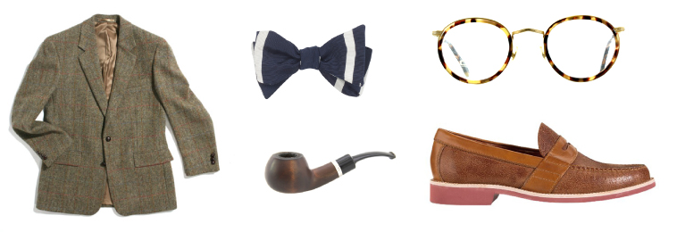
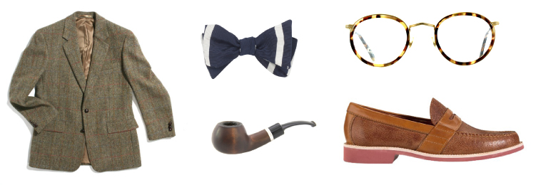

The motion to be debated:
Formal design education is necessary for practicing designers.
Wednesday, February 13th @ 6:30pm
Parsons The New School For Design,
Tishman Auditorium, 66 West 12th Street
—
So you spent 2-4 years of your life dabbling in "experimental" typography, producing faux packaging for high-end artisanal ramen (while subsisting on the low-end stuff), and pumping out unsolicited rebrands that would make any stodgy corporation look like a post-war era retro dream—and you got the portfolio to prove it.
Everyone is looking for a leg up, a workaround the mediocre middle. Is a formal design education the best way to get there?
Practitioners, professionals, thinkers, scholars. Hustlers, hackers, bootstrappers, ballers. It's time to bring your A-game and settle the score. Is it the dawn of the DIYers, the age of self-taught talent? Is design education outdated, outmoded? Or does a formal design education still make the grade?
—


Arguing For The Motion

Co-founder at SVA's D-Crit MFA
Educator (SVA), essayist (Design Observer and elsewhere), and author (What is Graphic Design For?), Alice is all walk when she brings her scholarly A-game. Born British and ready to brawl, Alice writes almost as mean as she debates.

Founding Partner & Principal Mucca Design
The only thing more intimidating than Mucca's body of work is the man behind it: Italian-born, New York City-based powerhouse Matteo Bologna. When he steps on the debate floor, Matteo commands with the deafening authority of an imperial ruler.

Arguing Against The Motion

Associate Design Director at Big Spaceship
Brooklyn based interactive designer, art director, and artist, Able is even more impressive than his movie-star quality name. His mohawk-ish mop regrows at twice the rate of a normal mans — neither rhetoric nor razor can keep him down.


 
